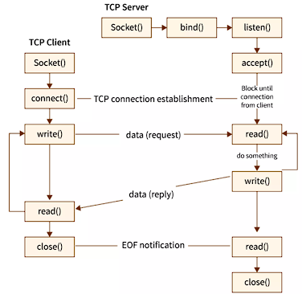

En el caso del SOCK_STREAM o socket de flujo, se asocia al Transmission
Control Protocol (TCP) o Protocolo de Transmisión de informaciones. Este
tipo de sockets establece conexión antes de la comunicación y garantiza
la consistencia en los bytes de los datos que se reciben y en la
secuencia de envío. Además, asegura la recepción sin errores de los
datos, así como seguridad a la transmisión y recepción de la
información.
SOCK_DGRAM
El Datagram Socket por su lado, se encuentra asociado al Protocolo de
Datagramas de Usuario (UDP). El SOCK_DGRAM se encargará del viaje de los
paquetes en formato de datagrama. Los paquetes enviados por este tipo de
sockets pueden llegar a extraviarse si que el receptor se entere que
ocurrió esa pérdida. Es recomendable para la transmisión de datos como
video y audio.
SOCK_RAW
Esta interfaz de conector omite el soporte integrado de la biblioteca
para protocolos estándar como UDP (Protocolo de datagramas de usuario) y
TCP (Protocolo de control de transmisión). Los sockets sin procesar son
interfaces de programación de sockets que se utilizan para el desarrollo
de protocolos personalizados de bajo nivel.
Funcionamiento
La configuración típica del sistema coloca el servidor en una máquina,
con los clientes en otras máquinas. Los clientes se conectan al
servidor, intercambian información y luego se desconectan. Un socket
tiene un flujo típico de eventos. En un modelo de cliente a servidor
orientado a la conexión, el socket en el proceso del servidor espera las
solicitudes de un cliente. Para hacer esto, el servidor primero
establece (vincula) una dirección que los clientes pueden usar para
encontrar el servidor. Cuando se establece la dirección, el servidor
espera a que los clientes soliciten un servicio. El intercambio de datos
de cliente a servidor tiene lugar cuando un cliente se conecta al
servidor a través de un socket. El servidor realiza la solicitud del
cliente y envía la respuesta al cliente.
Programacion de sockets en TCP
TCP significa Protocolo de control de transmisión. TCP es un
protocolo confiable orientado a conexión de la capa de
transporte. TCP establece la conexión antes de la transmisión
de datos.

Pasos para establecer un socket TCP en el lado del cliente:
Usar la función socket() para crear un socket. Esto crea un
endpoint para las comunicaciones y devuelve un descriptor de
socket que representa el endpoint.
Utilizar la función connect() para conectar el socket a la
dirección del servidor.
Transmitir datos entre dos partes que se comunican
utilizando las funciones de read() y write ().
Después de completar la transmisión de datos, cierre la
conexión usando la función close () para liberar cualquier
recurso del sistema adquirido por el socket
Pasos para establecer un socket TCP en el lado del
servidor:
Usar socket() para establecer un socket.
Utilizar la función bind() para vincular el socket a una
dirección. Cuando una aplicación tiene un descriptor de
socket, puede vincular un nombre único al socket. Los
servidores deben vincular un nombre para que sean accesibles
desde la red.
Para escuchar las conexiones del cliente, usar la función
listen(). Este indica indica la voluntad de aceptar
solicitudes de conexión de clientes. Cuando se emite
listen() para un socket, ese socket no puede iniciar
activamente solicitudes de conexión. listen() se emite
después de que se asigna un socket con socket() y bind()
vincula un nombre al socket. Se debe emitir una API listen()
antes de emitir una API accept().
La función accept() se utiliza para aceptar la conexión del
cliente. El servidor debe emitir correctamente las API
bind() y listen() antes de poder emitir una API accept().
Transmitir datos con la ayuda de la función read() y
write().
Programacion de sockets en UDP
UDP significa Protocolo de datagramas de usuario. UDP es un protocolo de capa de transporte sin conexión y poco confiable. UDP no establece una conexión entre dos partes que se comunican antes de transmitir los datos.
Para establecer una conexión de socket UDP en el lado del cliente:
Usar la función socket () para crear socket
Utilizar Las funciones recvfrom() y sendto() para transmitir datos entre dos partes que se comunican.
Pasos para establecer un socket UDP en el lado del
servidor:
Usar socket() para establecer un socket.
Utilizar la función bind() para vincular el socket a una dirección.
Transmitir datos con la ayuda de la función recvfrom() y sendto().
Las API de socket se encuentran en el modelo de comunicaciones entre la capa de aplicación y la capa de transporte. Las API de socket no son una capa en el modelo de comunicación. Las API de socket permiten que las aplicaciones interactúen con las capas de transporte o red del modelo de comunicaciones típico. Las flechas en la siguiente figura muestran la posición de un socket y la capa de comunicación que proporciona el socket.